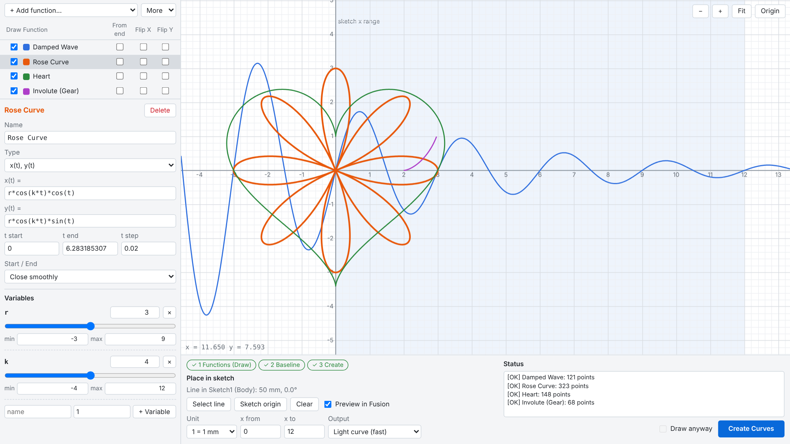
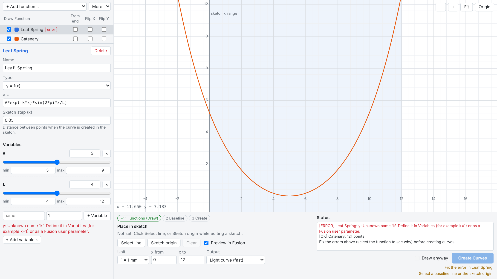
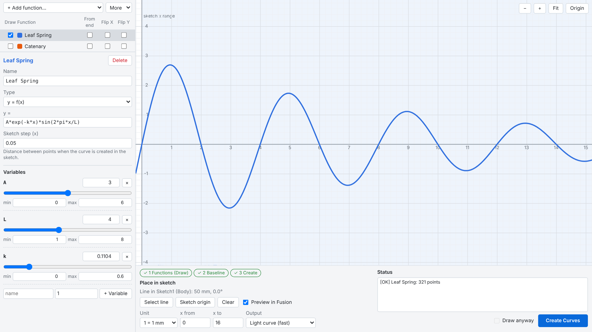
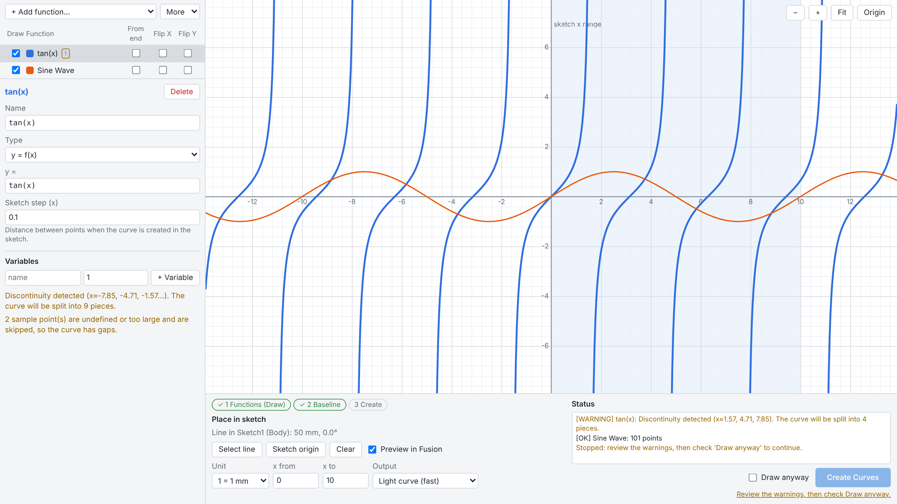

Math Curve 2 User Guide
Version 26.3.0 for Autodesk Fusion on Windows.
Getting started
- Install Math Curve 2 from the Autodesk App Store and start (or restart) Fusion.
- Open or create a design and enter Sketch mode.
- Choose Create > Math Curve Sketch. The Math Curve window opens. It stays open while you work in Fusion.
The window

- Function list: Draw shows a function on the graph and creates it in the sketch. From end, Flip X, and Flip Y orient it on the baseline.
- Editor: name, type, expressions, step or t range, start / end connection, and variables of the selected function.
- Graph: the shape of the functions, calculated the same way as in the sketch.
- Place in sketch and Status: the baseline, unit, x range, output, and what is ready to create. The three steps at the top (Functions, Baseline, Create) turn green as you go.
Functions
Use + Add function... to add a new function of one of these types, or a preset:
| Type | Fields | Notes |
|---|---|---|
| y = f(x) | y =, Sketch step | Drawn over the x range set under Place in sketch. The step is the distance between points in the sketch. |
| x(t), y(t) | x(t) =, y(t) =, t start, t end, t step | Start / End: leave open, close smoothly, or close with a straight line. |
| x(t), y(t), z(t) (beta) | also z(t) = | z is drawn along the sketch normal. The graph shows the x-y view. |
New functions and presets start with Draw checked. The selected function is shown dashed on the graph even when Draw is off, so you can tune it before choosing it for the sketch. Delete asks for a second click.
Writing expressions
| Write | Meaning |
|---|---|
x^2 or x**2 | Power |
a*sin(2*pi*x/L) | Variables such as a and L |
width*x | A Fusion user parameter, by name (length parameters use the selected unit) |
x if x < 5 else 10 - x | Piecewise definition |
pi, e, tau | Constants |
Functions: sin cos tan asin acos atan atan2 sinh cosh tanh asinh acosh atanh exp log log10 log2 sqrt cbrt abs sign floor ceil round min max hypot pow radians degrees. Angles are in radians.

Variables
- Add a variable with the name and value boxes and + Variable, or with + Add variable under an error. Remove it with ×.
- Drag the slider to see the graph change; the value is saved when you release it. Type a value in the box for an exact number.
- Set the slider range with min and max. Typing a value outside the range widens it.
- Names use letters, digits, and
_. Function names,x,t, and constants are reserved.

The graph
- Drag to pan, scroll or use + / − to zoom. Fit frames the functions; Origin centers (0, 0).
- The shaded band is the x range used for y = f(x) in the sketch.
- The graph has no unit. From end, Flip X, and Flip Y apply only to the placement in the sketch.
Placing in the sketch
- Click Select line and pick a sketch line in Fusion. Its start point is the origin and its direction is +x. Or click Sketch origin while editing a sketch to use its origin and X axis.
- Choose the Unit (1 = 1 mm, cm, m, in, or ft) and, for y = f(x), x from and x to.
- Choose the Output: Light curve (recommended: one smooth spline through every point, no extra sketch points) or Editable fit-point spline (can be edited point by point, but makes later work in the sketch slower).
- With Preview in Fusion checked, the curves, the baseline, and red (+x) / green (+y) arrows appear in the viewport. The preview is display-only and does not change the sketch.
Switching to another document clears the baseline, so curves are never created in the wrong design.
Status and warnings

- [OK]: ready, with the number of points.
- [WARNING]: a discontinuity (for example tan(x)), points that are undefined or too large, or many points. Review it, then check Draw anyway. If the warnings change, Draw anyway is cleared again.
- [ERROR]: the expression cannot be used, the step is too small (more than 20,000 points), or the calculation takes longer than 3 seconds. Fix it in the editor.
- The reasons why Create Curves is disabled are listed under the button. Click a reason about a function to select it.
Creating curves
Click Create Curves. The functions with Draw checked are added to the sketch of the baseline as one step, so one Undo removes them all. If any curve cannot be built, nothing is created and the reason is shown; the baseline stays selected so you can fix it and try again. After creating, select another line to place the curves again.
Function library
- Functions are saved automatically to
%APPDATA%\MathCurve2\function_library.json(macOS:~/Library/Application Support/MathCurve2/). - More > Export library... and Import library... save and load a JSON file. Imported functions are added; duplicate names get a number.
- An unreadable library is kept as a timestamped
.brokencopy. If only some functions cannot be read, the original is backed up before it is saved again. - More > Refresh re-reads Fusion user parameters after you change them.
License and privacy
- The 30-day trial has every feature of the paid version.
- The license is verified with Autodesk Marketplace in the background when the window opens, and again when you create curves if no recent result is available. Fusion is not blocked while it waits. An internet connection is needed.
- A successful check is kept in memory for up to one hour and is never written to disk.
- Only your Autodesk user ID and the app ID are sent, directly to Autodesk. Geometry is processed on your computer, and nothing is sent to the publisher. See the privacy policy.
Troubleshooting
Create Curves is disabled
Read the reasons under the button: check Draw for a function, fix errors, select a baseline, set a valid x range, or check Draw anyway after reviewing warnings.
The curve has gaps or is split
The function is undefined there (for example sqrt of a negative number) or has a discontinuity. This is shown as a warning, and the curve is split instead of being joined across the gap.
The curve is too small or too large
Check the Unit. With 1 = 1 mm, x = 10 is 10 mm in the sketch.
A license message appears
Sign in to Fusion with the Autodesk account that has the trial or license, check the internet connection, and click Create Curves again. The message links to the App Store page.
Contact
Email mekemeke.lab@gmail.com with the function and the message shown in Status.